HTTP connector
The HTTP connector enables integration with any cloud applications that has a HTTP based API. You can create a new connector as well as add new triggers or actions to existing Workato connectors.
There are 2 types of HTTP connectors:
- Standard auth and variations
- OAuth 2
Difference between HTTP and HTTP (OAuth2) connector
Apart from the authentication flow for the connection, the functionalities of both connectors are the same. The process of configuring webhook triggers, polling triggers and REST actions are identical.
For non-OAuth2 connections, an additional test API request is required to ascertain that the connection is valid.
What is the HTTP connector and what is it useful for?
Our generic HTTP and HTTP (OAUTH2) connector allows you to chat with all (well, almost!) cloud applications with an application program interface (API for short). This means that, outside of the Workato-built connectors that comes out of the box, you can build whatever triggers or actions you need to power your integration recipes.
With the HTTP connector, it takes less than 20 minutes to build your own trigger or action on Workato. This course will walk you through:
How to set up a connection (Oauth2 and non OAuth2) to your app
How to build your own Workato triggers to get notified when something happens in your apps
How to build your own Workato actions to execute certain steps in your apps automatically
Want to create an invoice in your accounting system? Make a POST request with a JSON request body. Want to retrieve metrics from your analytics application? Make a GET request with your query parameters. Want to trigger off upon new leads filling out your online form? Create a webhook trigger that notifies Workato immediately whenever a new lead completes your form. Want help getting started? Simply read on, or chat with one of our Customer Success superheros :)
Set up your OAuth2 connection
The HTTP (OAuth2) connector supports the authorization code grant variant of the OAuth2 standard, which is the current de facto authentication standard adopted by a number of cloud apps. It’s widely adopted because it allows you to give third parties access to your apps without having to disclose your username and password to the third party. In this case, Workato simply redirects you to your app, where you key in your login credentials, and that’s sufficient for the app to trust that Workato is acting on your behalf when it makes API requests.
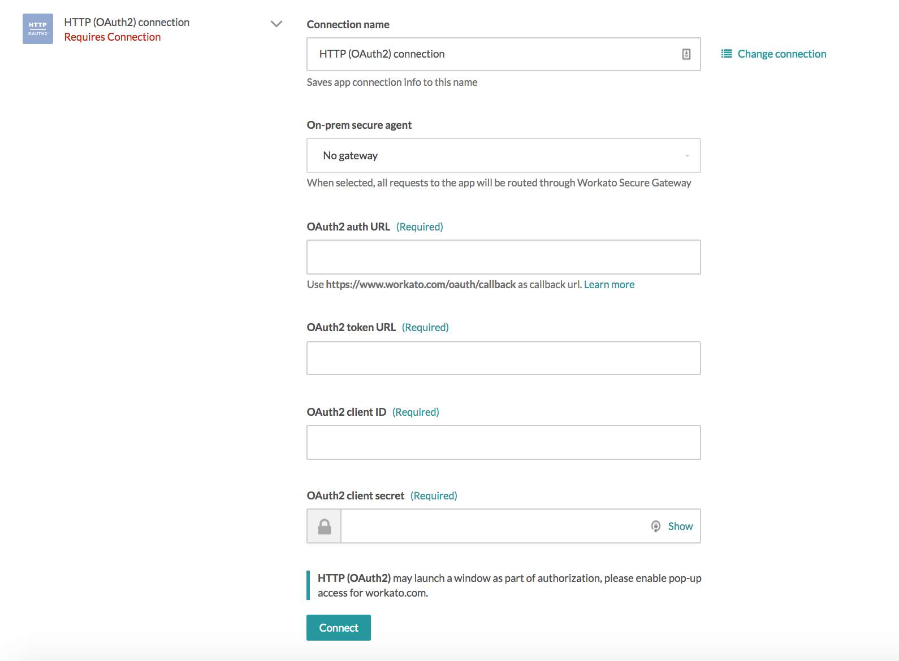 HTTP (OAuth2) connector's connection fields
Relevant components of OAuth2 connection
Authorization URL
URL that Workato redirects you to when you click on the ‘Connect’ button. This usually brings you to the login screen of your app.
Some APIs require that you include certain parameters in the authorization URL. Common examples are response_type (code or token) and scope (read, write, admin, etc).
This should be publicly available from the API documentation of the app you’re connecting to, under the Authentication section.
Token URL
URL that Workato will retrieve an auth token from. This auth token is used to verify that we have permission to access your app and its data.
This should be publicly available from the API documentation of the app you’re connecting to, under the Authentication section.
Client ID and client secret
The client ID identifies you as the user who’s sending these API calls, while the client secret authenticates that you as this user.
This is usually found in the Settings or Integrations page (or equivalent) of your logged in app account that you wish to connect to. This is specific to your account and should be kept secret.
Credentials
A set of username and password for logging into your app to give permission for Workato to access the data in the app.
This user (to whom the credentials belong) should have the correct permissions to read/write to the records (e.g. customer records, sales invoice records) you want to access.
Redirect/callback URL (to be configured in the app)
The URL provided to the app for redirection back to Workato after going through the authentication flow and credentials/token exchange.
Provide this URL https://www.workato.com/oauth/callback to the app if it asks for it in the Integration setup screen.
Example - connecting to Eventbrite via OAuth2
Let us run through an example of how we can connect to an OAuth2 application. In this case, we’ll use Eventbrite, an events management and ticketing application.
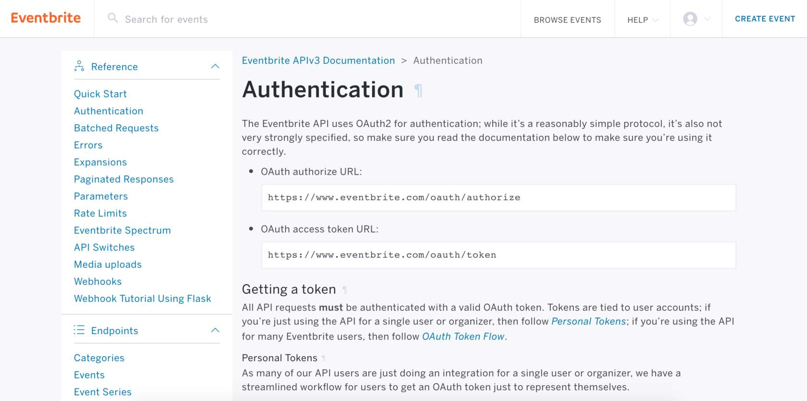 Eventbrite OAuth2 authentication page
From the documentation page, we can obtain 2 of the required fields for our connection - the authorize URL and the access token URL. We would need to append further parameters to the URL. Eventbrite's documentation mentions that we'd need to post to this URL: https://www.eventbrite.com/oauth/authorize?response_type=code&client_id=YOUR_CLIENT_KEY
But as Workato will handle the client key, the following is what's needed in the input field to connect.
Eventbrite authorize URL:
https://www.eventbrite.com/oauth/authorize?response_type=code
Eventbrite access token URL:
https://www.eventbrite.com/oauth/token
In order to connect to your Eventbrite account successfully, you would also need a set of client ID and client secret. To obtain this, you will need to register an app with Eventbrite so that they can assign the app with a client ID and secret. Log into Eventbrite and navigate to Account Settings > App Management.
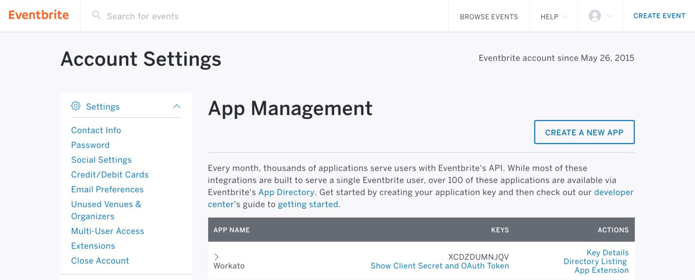 Eventbrite's app management screen
In the app management page, you will be able to find your client ID (also called key). Expand the Show Client Secret and OAuth Token section to retrieve the client secret, and navigate to the App Extension section to input the callback URL https://www.workato.com/oauth/callback into Eventbrite.
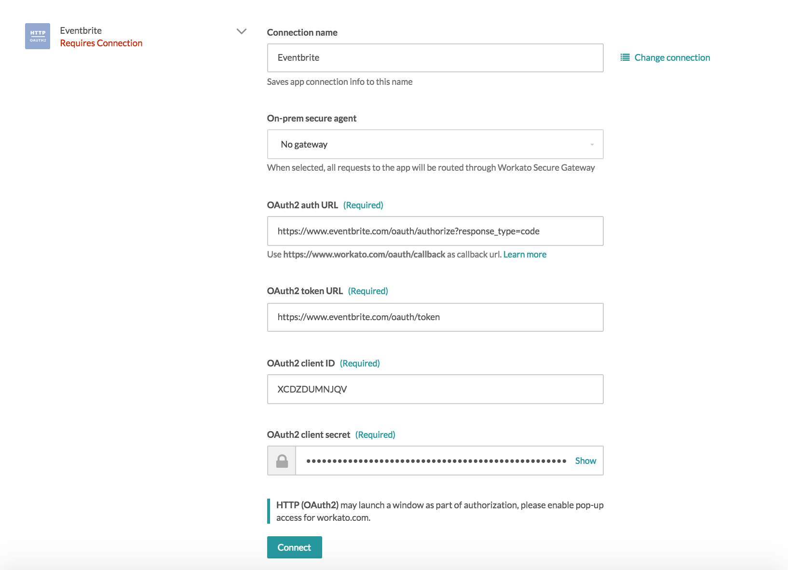 Completed Eventbrite connection
Set up your non-OAuth2 connection
Establishing a non-OAuth2 connection is slightly more complex than establishing an OAuth2 connection - you would have to select the authentication type specific to the application you're attempting to integrate with. In this segment, we’ll be going through the various options available.
None
This allows you to create a connection without providing any authentication details. This is usually the case when you wish to just receive a webhook trigger from the app. Workato generates a URL for you to direct your webhooks to, and retrieves information from the webhook payload sent in.
 HTTP connector authentication type: None
HTTP connector authentication type: None
Basic
This requires your username and password. An alternative to your username and password would be an API key or API token, retrieved from your account settings. This is encoded with Base64 in transit, over SSL. This is a common authentication flow. 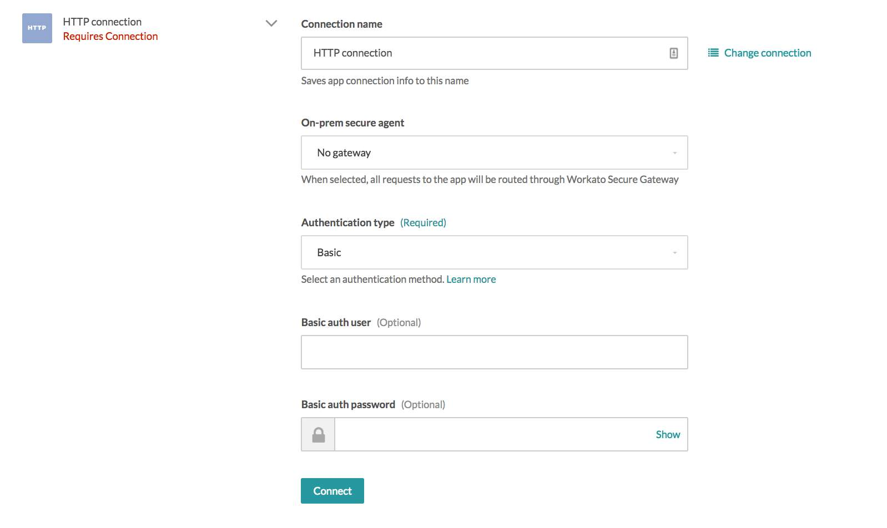 HTTP connector authentication type: Basic
Header Auth
For applications which require additional headers outside of the usual username and password or API key, or if you want to customize the headers sent in the request. Header authentication can be used when you have a generated token ready for use. 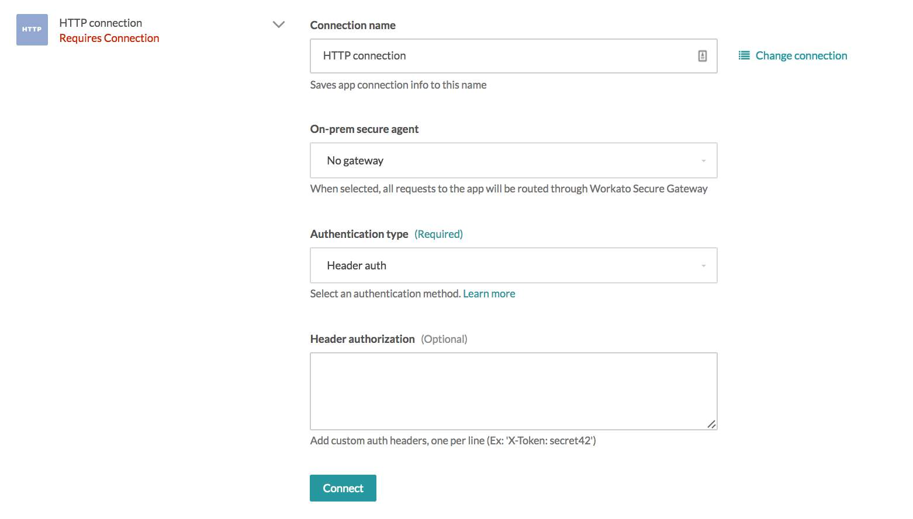 HTTP connector authentication type: Header authorization
Query params
For applications where the authentication structure is based on validating an API key as a parameter. What you need to do is to add the parameter key/value pair in the params authorization field. 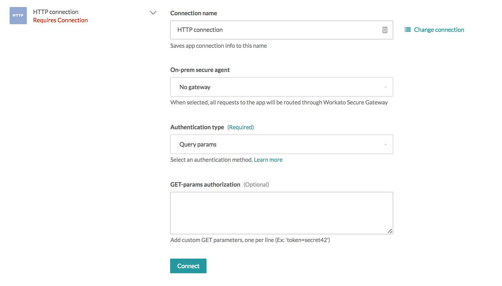 HTTP connector authentication type: Query params
Custom
Custom simply allows you to use a combination of any of the above fields. 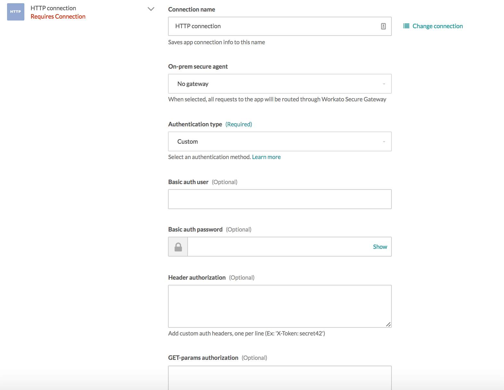 HTTP connector authentication type: Custom
Testing your non-OAuth2 connection
After you've connected, you would need to test out your non-OAuth2 connection to ensure that it's valid. To do that, send out a test API request - a simple one would be a GET request. If it succeeds, you know that the connection is valid.
Example - connecting to JIRA via basic authentication and testing the connection via a GET action
Let’s try to connect to JIRA using basic authentication - JIRA’s documentation for basic authentication can be found here. In the case of JIRA, we need to provide several things: subdomain (which tells us what JIRA company instance to connect to, essentially - your company’s JIRA database), username, password.
For this example, I’ve created a company instance in JIRA with a company name Workato321, and JIRA has automatically assigned my subdomain to be workato321.atlassian.net
I’ve also created a project in my new JIRA instance, named PPP, to be used for testing out my connection later.
Setting up your JIRA connection
 JIRA screenshot with subdomain workato321.atlassian.net and existing project PPP
JIRA screenshot with subdomain workato321.atlassian.net and existing project PPP
We can provide our username and password in the connection settings as below. For the field On-prem secure agent, I selected no gateway as my JIRA instance is on the cloud.
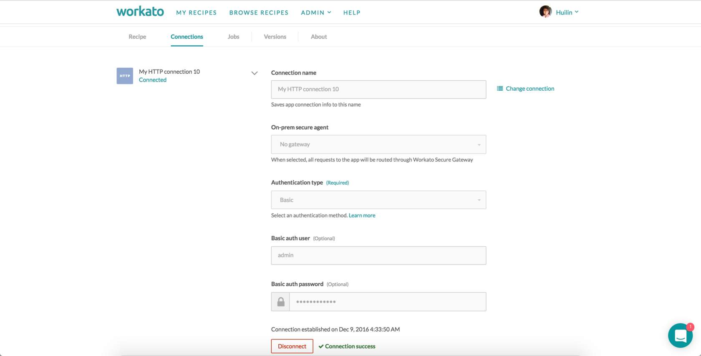 JIRA connection settings
Testing our JIRA connection by running a GET action
We're not done yet! Let's test out our connection. In the case of JIRA, the instance (subdomain) information needs to be sent in within the API endpoint, therefore it doesn’t need to be provided in your connection settings.
To test out my connection, I’m just going to ask Workato to fetch me all the projects in my JIRA instance with this GET all projects endpoint: https://workato321.atlassian.net/rest/api/2/project.
This is how my test recipe looks - it has a Scheduler trigger (New scheduled event, so that a job will be ran immediately when I click on run recipe, and it simply calls the API endpoint. We didn’t fill in the sample response body as this is simply a quick test - we’re not really interested in building the datatree for use in subsequent steps yet.
 Configured HTTP action to get list of JIRA projects
Configured HTTP action to get list of JIRA projects
Now let’s run the recipe and click on the job that’s carried out. You should be able to see what’s been sent by the HTTP connector under the input tab.
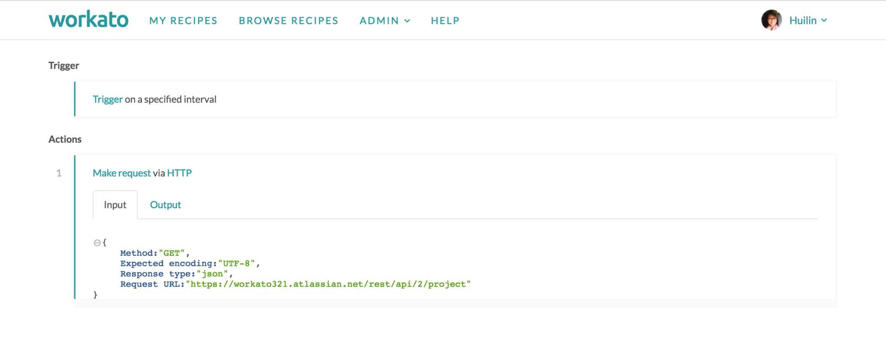 API request sent, as viewed from the job details input tab
And if the API endpoint as well as username and password is correct, you should be able to see the data that’s returned under the output tab - in this case, my PPP project.
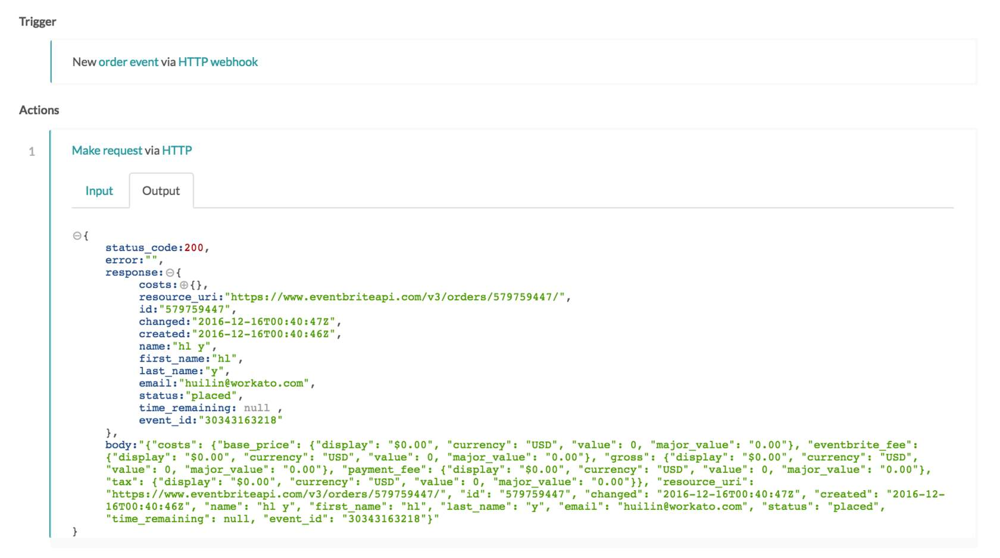 API response received from JIRA, as viewed from the job details output tab
Building webhook triggers
If the app you wish to integrate with supports webhooks, that should be listed in the app’s API documentation. Webhooks are notifications sent out immediately by your app to a target URL when an event happens. Usually, you’re able to define what specific event you wish to receive notifications for. To build a webhook trigger in Workato, we’ll direct these notifications to your Workato recipe, so that it will trigger and execute the recipe actions whenever the event happens in your app.
For example, you can choose to build a webhook trigger that notifies your recipe whenever new customer tickets are marked with status ‘Urgent’, and have an action to send out an SMS to the account manager for this customer. In this case, the recipe will help to ensure urgent tickets are responded to in a timely fashion.
If you’re interested only in receiving webhooks from your app, you won’t even need to set up any connection or go through the authentication flow.
These are the input fields in Workato's webhook trigger. Let's run through the key fields to note when building a webhook trigger.
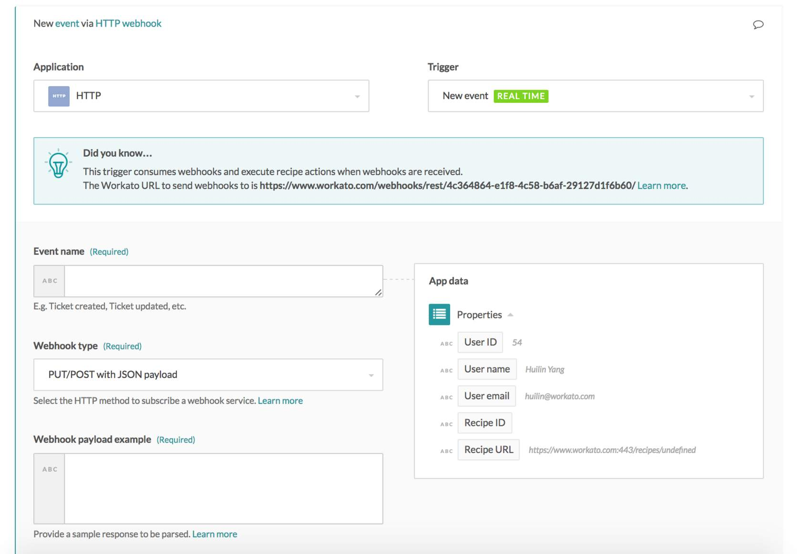 HTTP connector's webhook trigger
Workato-generated target URL
URL address to direct your app-generated webhooks. The string of 36 characters generated in this URL is unique to your account, so keep it safe - otherwise anyone else on the internet can send you random data!
By default, this URL is incomplete. Provide an event name in order to generate a full URL to be used as a target URL.
Event name
Used to describe what you’re doing in this trigger. Put a descriptive name here so that you remember what is the specific event you’re receiving notifications for.
The event name will also be appended to the end of the Workato-generated URL in order to generate an URL which is unique to this recipe.
Webhook type
Tell the recipe what is the type of webhook to expect, as well as the format of the data coming in, so that it knows how to decipher and process the payload. This depends on the specifications provided in the API documentation.
Some APIs may be able to send you webhook payloads in various formats - in that case, select the one you’re more comfortable with, and make sure to provide the payload in the correct format in the Webhook payload example input field.
Webhook payload example
Provide a sample of the webhook payload that’s expected to be sent by your app to Workato. Typically found in the API documentation - simply copy and paste it in the appropriate JSON, XML or form encoded format as you've defined previously. You can also add additional fields to this, in the correct format, if you know that there are custom values that will be sent by your app.
This payload example provided does not affect the actual payload being sent to Workato when a trigger event occurs. Instead, this sample schema is used to build the output datatree and its data pills, thus ensuring that you’re able to map the data coming in with your webhook properly to subsequent steps in your datatree.
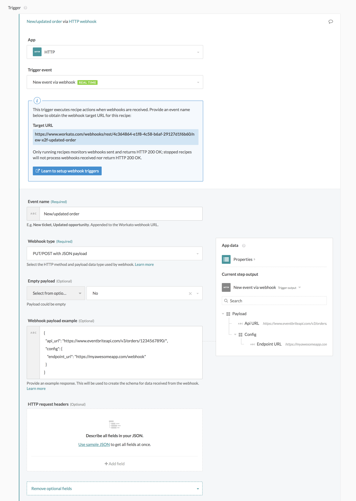 Example of a configured webhook trigger
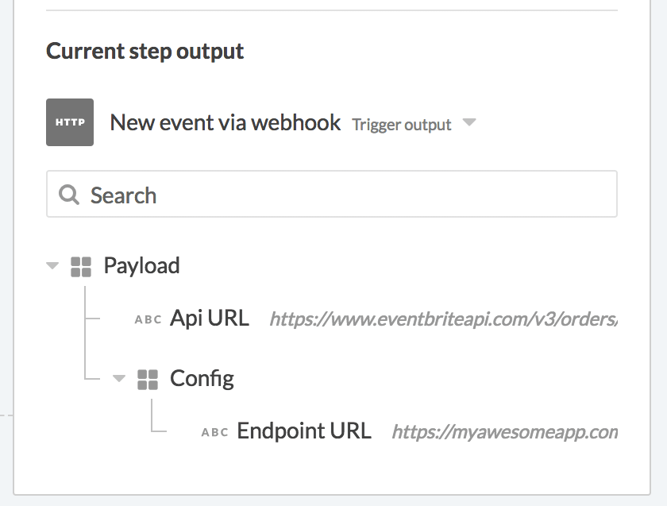 The trigger data schema corresponds to the webhook payload example provided in configuration
Example - building a new order trigger in Eventbrite
Perhaps we would like to build a real-time webhook trigger that triggers whenever a new order is placed in Eventbrite for your event “Christmas Marathon”. Let’s check out Eventbrite’s webhook
Setting up the Workato HTTP trigger
We need to first get an URL from Workato to send our webhooks to. To do that, let’s start creating a webhook trigger on Workato. I've filled in the event name I want to create a complete target URL, and I've selected a PUT/POST with JSON payload as I know that's the format for Eventbrite webhooks.
I've entered an empty JSON schema into the webhook payload example as I'm not too sure what my payload looks like yet.
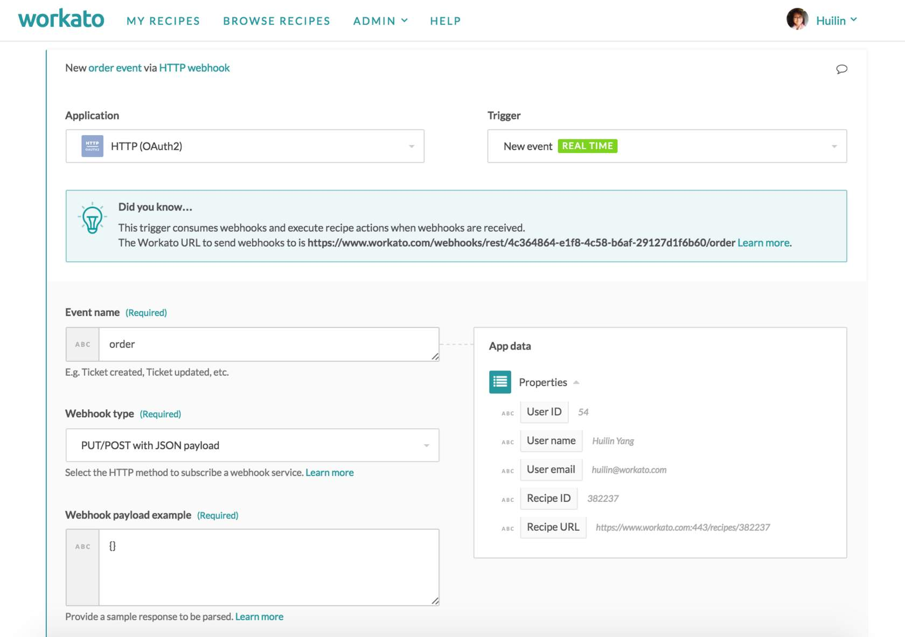 Configuring webhook trigger with the event name and empty payload example
Setting up the Eventbrite webhook
In Eventbrite, navigate to Account Settings > Webhooks to add a webhook. Input the payload URL obtained from Workato, and select the event you wish to monitor (‘All events’ is also available as an option). You can see that you’re able to select a variety of events to listen to and trigger upon, but in this case we just want to monitor new order for our Christmas Marathon event.
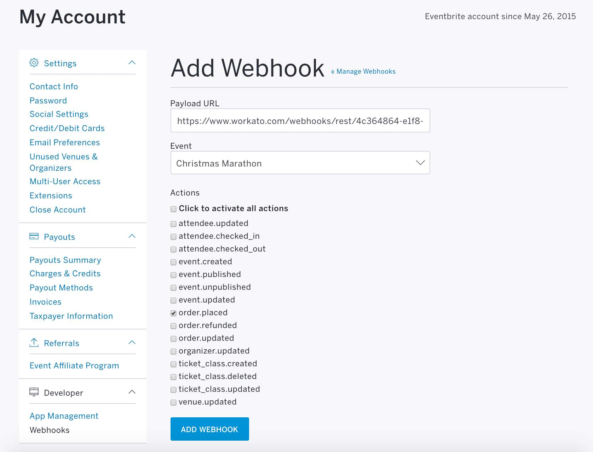 Creating webhook to monitor new orders placed in Eventbrite
You can send in a test order to test the trigger, either via the webhook configuration page, or by creating an order on the event you’re monitoring. If you’ve set up the webhook trigger successfully, you should receive a job.
In this case, I've successfully ran a test job, and I can view the webhook payload by going to the trigger output tab in my job details page.
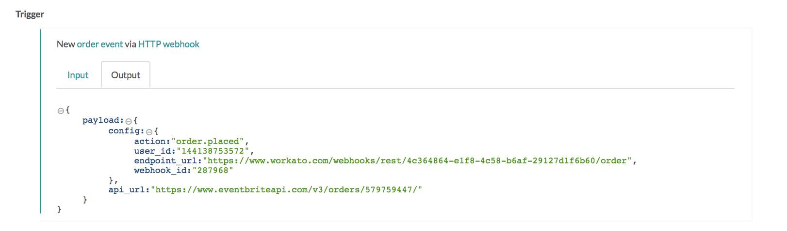 Job details output tab showing the actual JSON response from Eventbrite
Testing the trigger & retrieving API response to generate datatree
We're almost done with our webhook, but we still need to be able to generate a datatree for use in subsequent steps in our recipe. With the empty payload we had entered above, there's no trigger datatree available in subsequent recipe steps.
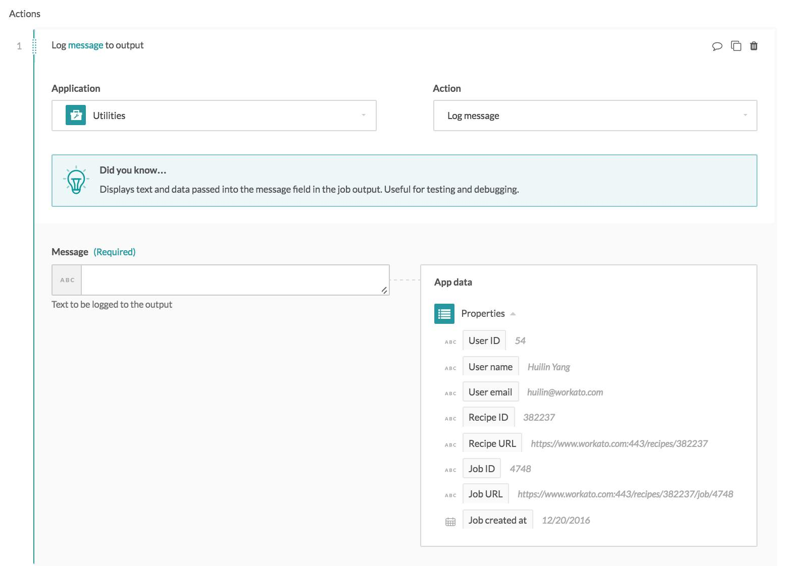 With an empty webhook payload example, no datatree is generated in the action steps
We can move the JSON response we obtained in the job history details to the payload example section with some tweaking to ensure it's formatted in JSON. Alternatively, we can also simply retrieve the JSON from the API documentation, if available.
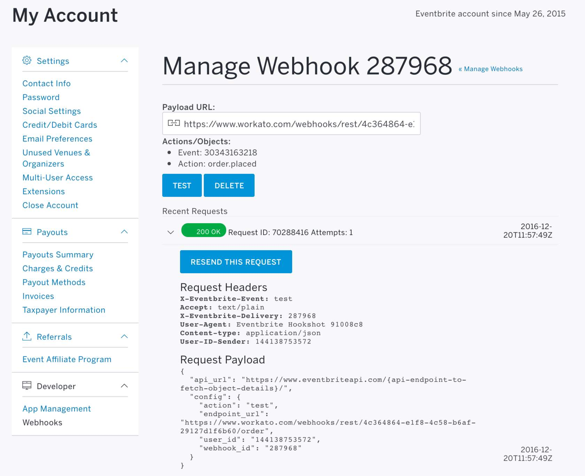 Request payload can be retrieved via the webhook management console in Eventbrite
The following is the JSON response that we should be inputting into the webhook payload example field.
JSON formatted webhook payload example:
{
"config": {
"action":"order.placed",
"user_id":"144138753572",
"endpoint_url":"https://www.workato.com/webhooks/rest/4c364864-e1f8-4c58-b6af-29127d1f6b60/order",
"webhook_id":"287968"
},
"api_url":"https://www.eventbriteapi.com/v3/orders/579759447/"
}
Completed webhook trigger
That’s it! You have now created an Eventbrite webhook trigger for yourself. Take note that this trigger only passes you the API URL to fetch the actual data of the order that has been placed. To fetch this data, you can create a quick REST action to GET an order with this API URL, which we will be covering later in this course.
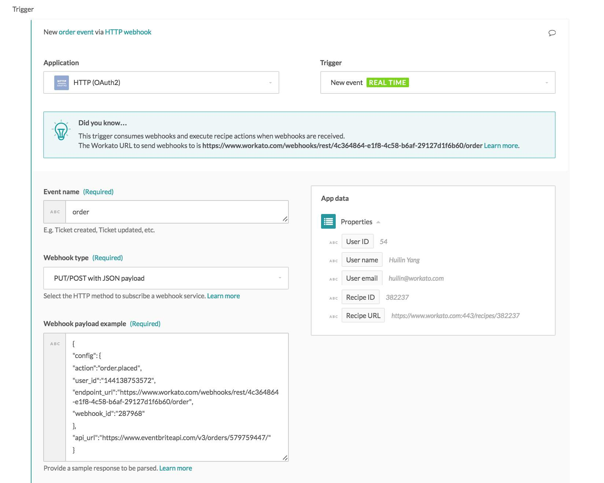 Configured webhook trigger
We can see the datatree of this webhook trigger, which is generated by the sample webhook payload provided in the trigger configuration.
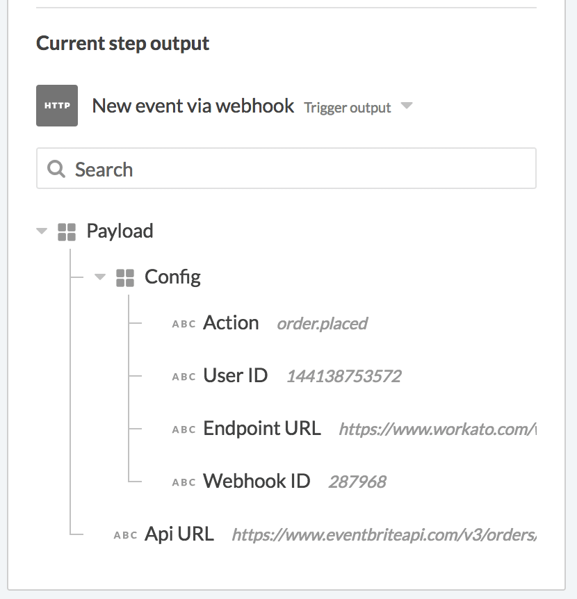 Webhook datatree
Building your REST request action
You’re able to build any actions supported by an API on the HTTP connector - for example, create, update, search, get, delete actions. The following screenshots show the input fields available in the HTTP REST request action. Let's run through the key fields to note when building your action.
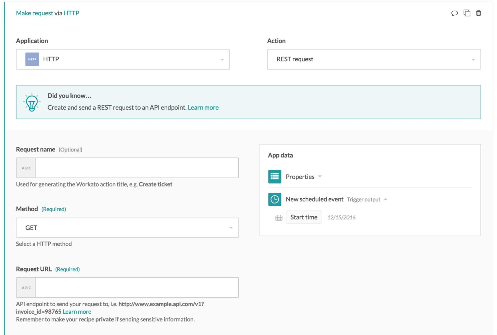
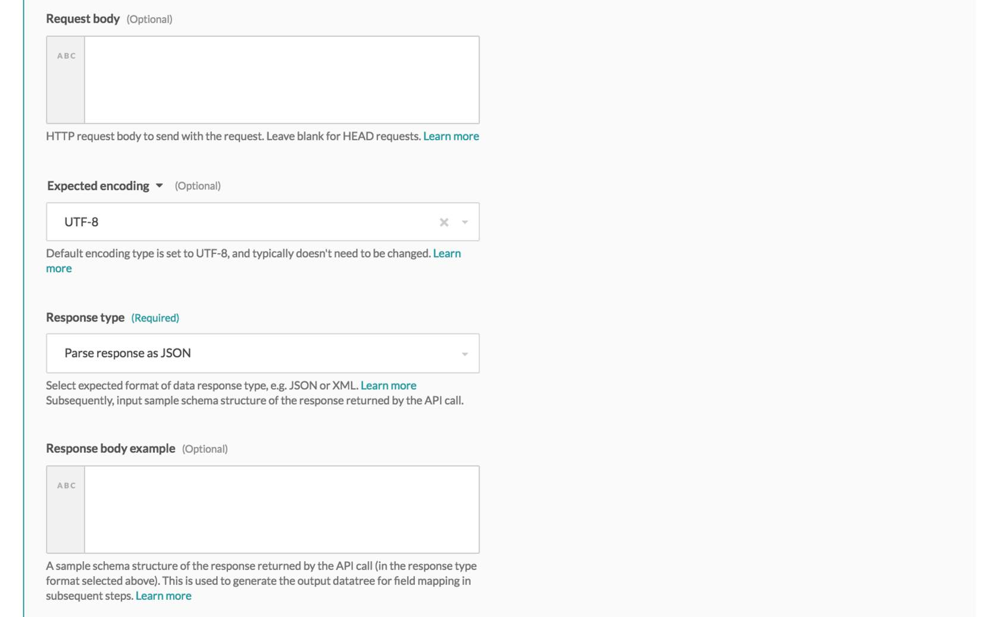 Input fields for REST actions
Request name
This is used to describe what you’re doing in this action. Put a descriptive name here so that you remember what this action will execute.
Method
The specific HTTP method to call. The API documents will typically tell you what is the HTTP method associated with the API endpoint you want to call.
Request URL
The API endpoint to send your request to.
Request body
The data to send in with the request, in JSON format. This is typically only required for create and update actions (PUT, POST or PATCH methods), as you would need to provide the data of the record to be created or updated.
Response type
This specifies the format of the expected API response. If we’re not interested in converting the response into a datatree for subsequent use downstream in the recipe, simply select the option “Raw HTTP response body”. Otherwise, select JSON or XML accordingly.
Response body example
This will be converted into a datatree for subsequent use in the recipe. If you have selected “Parse response as JSON” above, you should input the expected schema in JSON format. If you have selected “Parse response as XML”, you should input the expected schema in XML format.
Example - building a get order details action in Eventbrite
Following from the Eventbrite new order webhook trigger we've previously configured, we now have a API endpoint to get order details for a specific order that has just been placed.
Setting up the HTTP action
The relevant input fields for this action would only be the following. We can pass the API URL pill into the request URL input field to make the call to get the specific order details. We can leave the response body example empty for now, which means that no datatree will be generated for this step as of yet.
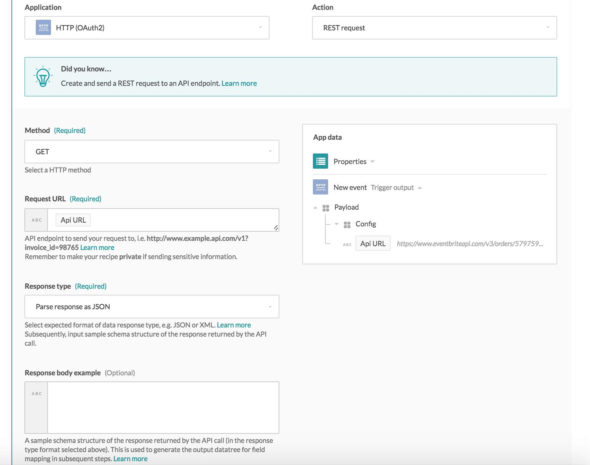 Partially configured GET request missing the optional response body example for generating the datatree
Testing the action
If you hadn't previously set up the trigger, you can simply pass a hardcoded URL into the request URL, replacing the specific order ID 579759447 with the ID of an Eventbrite order that exists in your Eventbrite account.
Eventbrite's GET order details API call:
https://www.eventbriteapi.com/v3/orders/579759447/
Alternatively, if you had previously configured the webhook trigger and ran a couple of sample jobs, you can simply rerun a job again. As the trigger data is cached in Workato, rerunning the job will simply reuse the payload data that had been received in the trigger and execute this GET action.
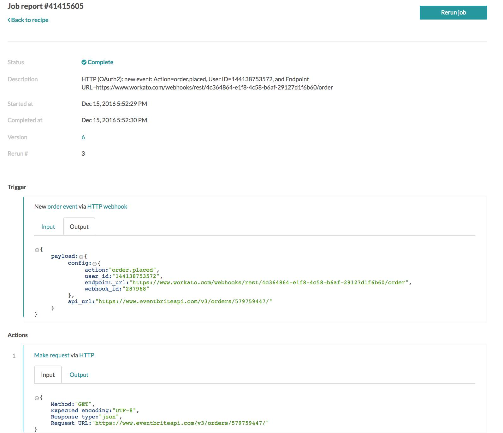 The API URL from the trigger is passed to the action as the request URL
Retrieving API response to generate datatree
Look in the job history and you should be able to view the response. The text in the body is formatted precisely in JSON, so if you like you can simply copy that and put it into the Response body example input field (without the first and last double quotes).
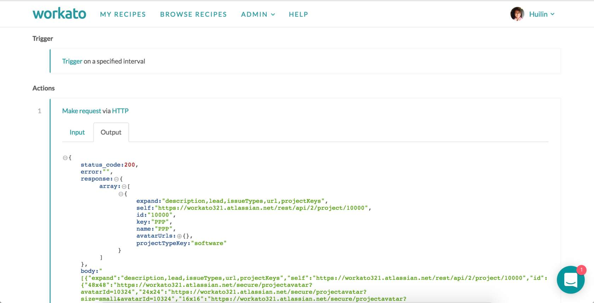 API response for Eventbrite's GET order API call, as viewed in the job history output tab
API response for Eventbrite's GET order API call:
{"costs": {"base_price": {"display": "$0.00", "currency": "USD", "value": 0, "major_value": "0.00"}, "eventbrite_fee": {"display": "$0.00", "currency": "USD", "value": 0, "major_value": "0.00"}, "gross": {"display": "$0.00", "currency": "USD", "value": 0, "major_value": "0.00"}, "payment_fee": {"display": "$0.00", "currency": "USD", "value": 0, "major_value": "0.00"}, "tax": {"display": "$0.00", "currency": "USD", "value": 0, "major_value": "0.00"}}, "resource_uri": "https://www.eventbriteapi.com/v3/orders/579759447/", "id": "579759447", "changed": "2016-12-16T00:40:47Z", "created": "2016-12-16T00:40:46Z", "name": "hl y", "first_name": "hl", "last_name": "y", "email": "huilin@workato.com", "status": "placed", "time_remaining": null, "event_id": "30343163218"}
Completed action
This is what your action should look like in the end:
Configured GET action
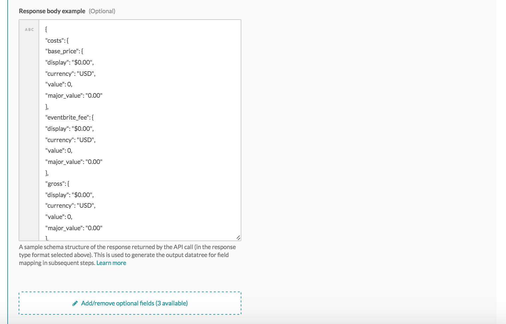 Configured GET action
 Step 1 output data tree generated from the provided response body example
Step 1 output data tree generated from the provided response body example
Example - building a create project action in JIRA
Let's create a new project in JIRA via the HTTP connector. The API endpoint to refer to can be found here
Configuring the REST action
We'll configure the action with the minimal set of values needed. The following shows the unconfigured HTTP REST action.
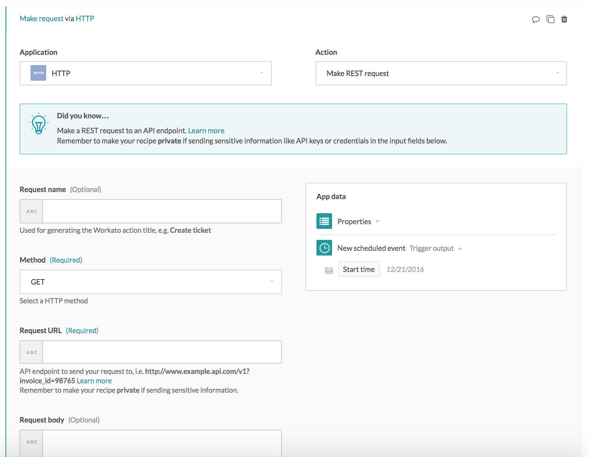
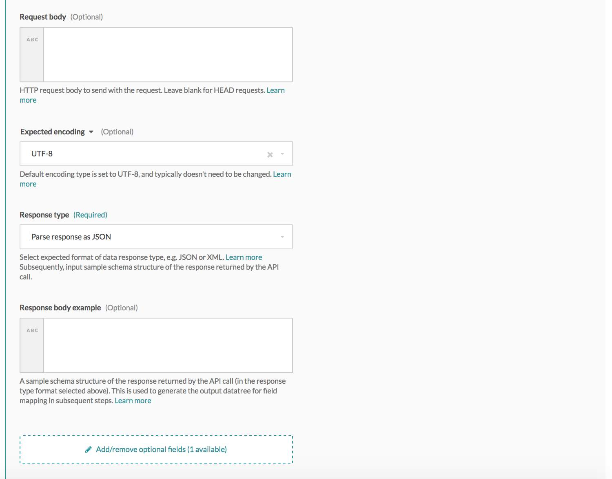 Unconfigured HTTP REST action
Request name
Create project.
HTTP method
POST, as specified in the API documentation.
Request URL
https://[subdomain here]/rest/api/[version number here]/project
Request body
Required in this case as we need to provide data to create the project. See below for the request we're sending in.
Response type
JSON, as that's the format JIRA API works with.
Response body example
We're retrieving that from the API documentation as well. See below for the response we're providing.
Request and response body
For the request body, you need to send in the actual values. We've included a JSON representation of the request body as follows, but as it's unlikely that you would want to create projects with the key EX and the name Example, you would need to replace the hardcoded values with pills from previous steps in the recipe.
Request body for creating a new JIRA project. Actual data for creating the new project should be inserted here:
{
"key": "EX",
"name": "Example",
"projectTypeKey": "business",
"projectTemplateKey": "com.atlassian.jira-core-project-templates:jira-core-project-management",
"description": "Example Project description",
"lead": "admin",
"assigneeType": "PROJECT_LEAD"
}
For the response body, we just need an example JSON to generate the datatree with, so simply using the response example from the API documentation is fine.
Response body example to generate the datatree. Any sample data can be used here:
{
"self": "http://example/jira/rest/api/2/project/10042",
"id": 10010,
"key": "EX"
}
Configured action
The following depicts the configured action we now have:
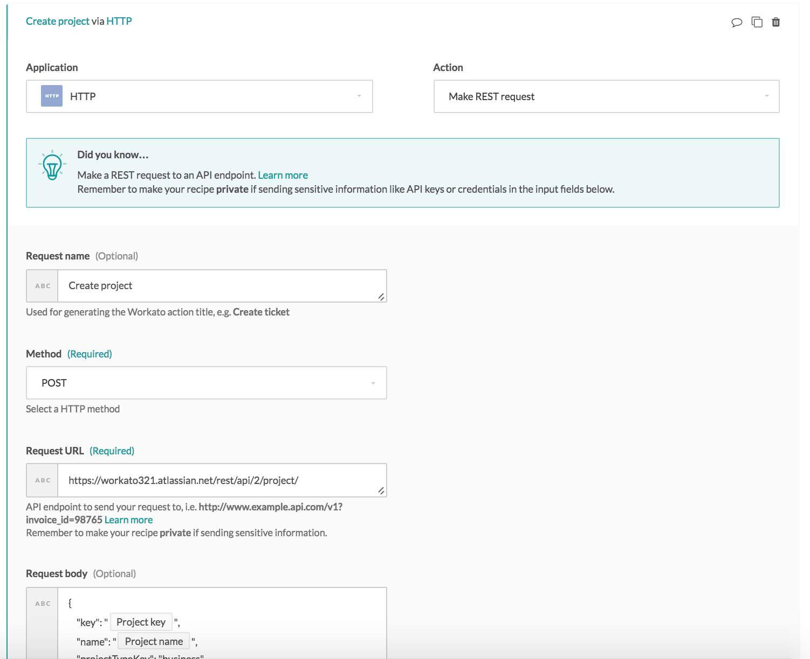
 Cofigured JIRA project REST request
Cofigured JIRA project REST request
The following shows the datatree of the configured GET action, which is generated from the Response body example.
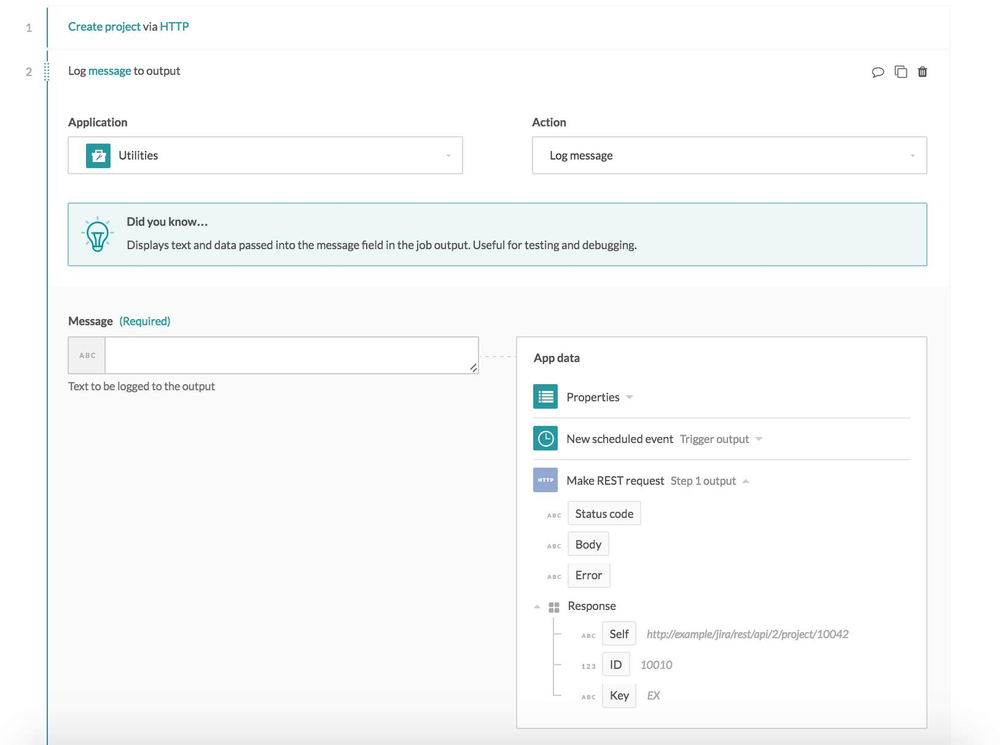 Generated datatree from the response body example, as viewed from the next step
Testing the configured action
To test it out, we need to have a complete recipe and test the recipe. I'm using a Scheduler trigger "New scheduled event" here as it allows me to test my action quickly.
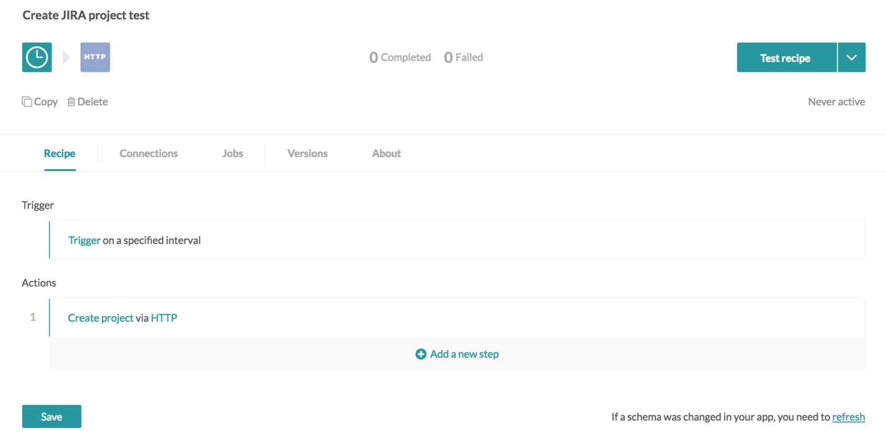 Completed recipe with a Scheduler trigger and our HTTP action
With a completed recipe (with both trigger and action), let's click on "Test recipe". Test recipe will run a single sample job as shown below.
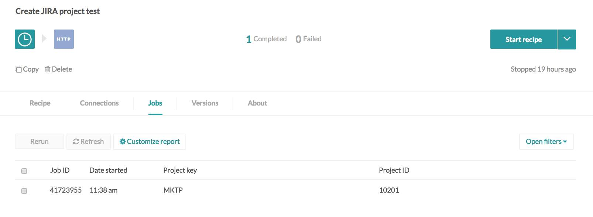 Run one sample job by clicking on "Test Recipe"
Click on the job to examine the job details to see what happened exactly. If you had a successful job, you should be able to see your project created in JIRA.
The job input tab shows what data was passed into the GET action.
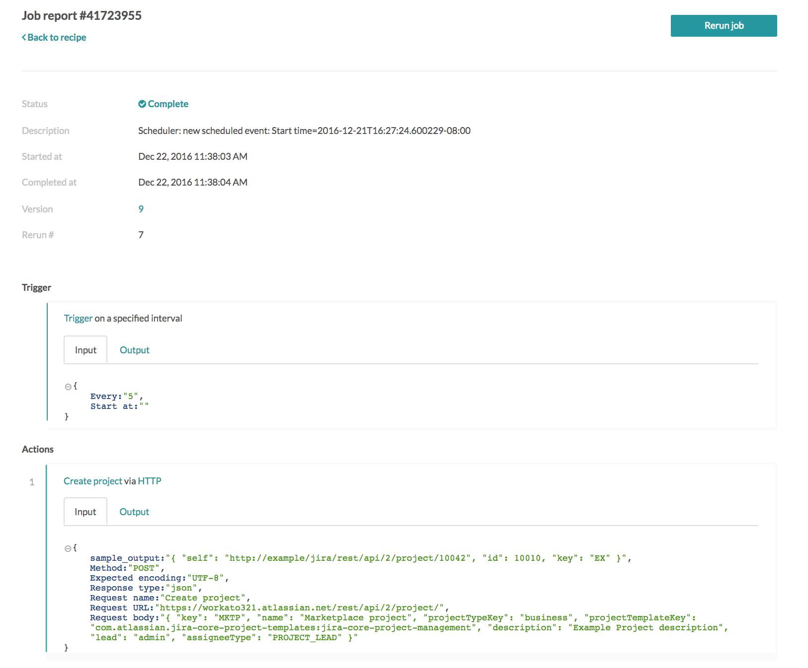 API request sent, as viewed from the job input tab
The job output tab shows what data was received as an API response.
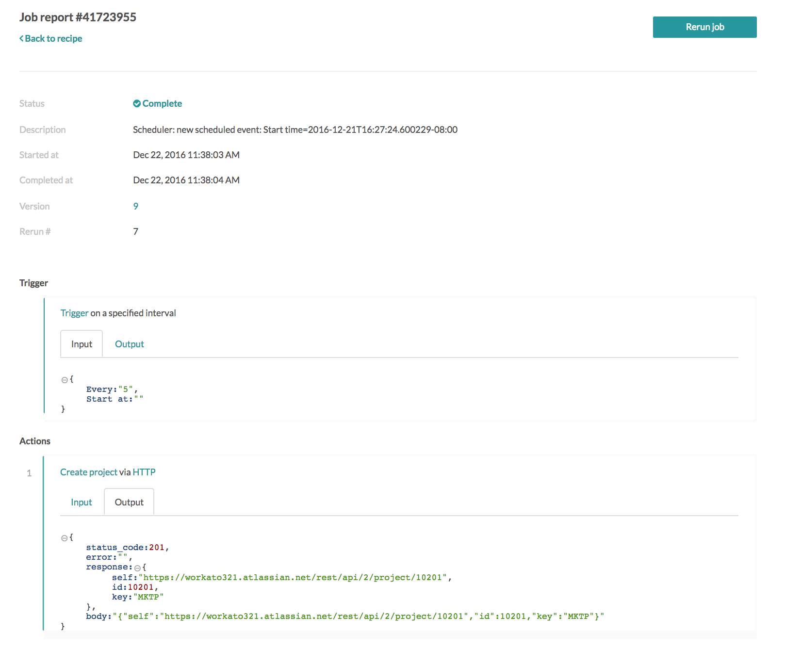 API request recieved, as viewed from the job output tab